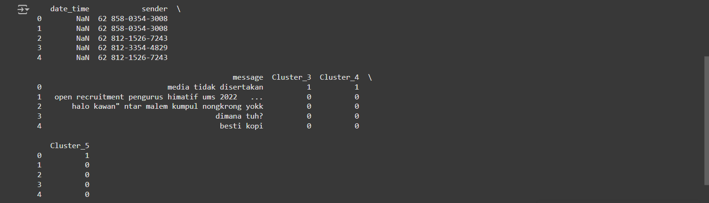

Laporan Analisis Konten WhatsApp
Daftar File
Chat WhatsApp dengan INFORMATIKA 22.txt
Berisi log percakapan grup WhatsApp INFORMATIKA 22.
Clustering
Notebook Jupyter untuk proses clustering data chat.
data_cleansing
Notebook Jupyter untuk proses pembersihan data.
data_group_cleaned.csv
File hasil pembersihan data dalam format CSV.
data_group_clustered.csv
File hasil clustering data dalam format CSV.
grup_infor.csv
File tambahan berisi informasi grup dalam format CSV.
grup_infor.tar
File arsip berisi data grup.
scale
Notebook Jupyter untuk proses normalisasi data.
Hasil Clustering
Berikut adalah hasil clustering menggunakan algoritma k-Means:
